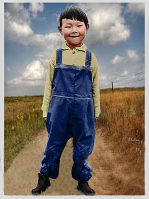
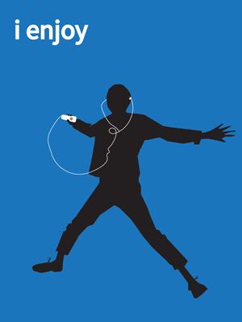
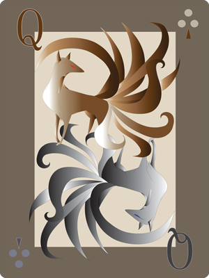
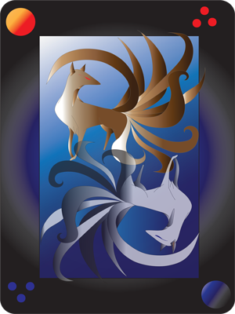
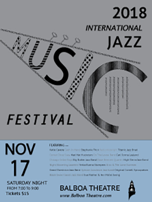
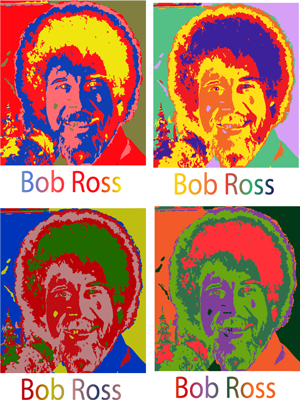
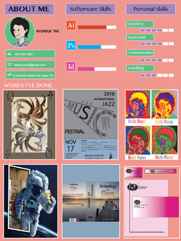
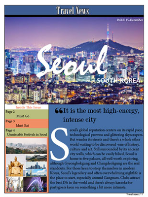

My Works
Check out some of my Works!

The image depicts a little boy with an innocent smile, and the key point of the image is the boy's
smiling face which is adorable, so I would like to paint him as naturally as possible.

My concept of this project is that "I am enjoying my life." My life in my country before I moved to
the USA was so busy and made me exhausted because I worked very hard. However, I have been able to
more free time to do what I after I move to the USA, I could spend more time on myself. So I could
do what I want such as learning drawing, dancing or taking a computer class since I moved. That is
why I choose enjoyment for the concept of this project.

The project is to a playing. I wanted to make it a little different. And I remembered a story I had
heard from my parents and friends in my childhood. It is about a nine-tailed fox and this idea
became the concept of my playing card.

The project is to a playing. I wanted to make it a little different. And I remembered a story I had
heard from my parents and friends in my childhood. It is about a nine-tailed fox and this idea
became the concept of my playing card.

My concept of this project is enjoyment. I want to make poster events for family, lovers or friends
in the upcoming holidays such as Fun Run, Thanksgiving music concert, Winter festival and so on.
I decided on this concept because I miss so much my family and friends especially on holidays. So I
thought about events for the poster that anyone could enjoy.

Create a poster by live tracing a portrait image in Illustrator. Duplicate the vector art 4 times
and color each using the Color Guide panel and applying 4 different color schemes.

I like the unique way the small business card folds out into full size and interesting CV. Also, I
think it is a good idea for self-promotes and contains a lot more information about the person in an
interesting way.
This design influenced my work as I can use the idea of extra information being hidden inside and
the coordinating colors and patterns.

The concept of this project is a trip. It introduces cities and countries through newspapers. I
chose this idea as my project concept because I like reading books or articles about travel.